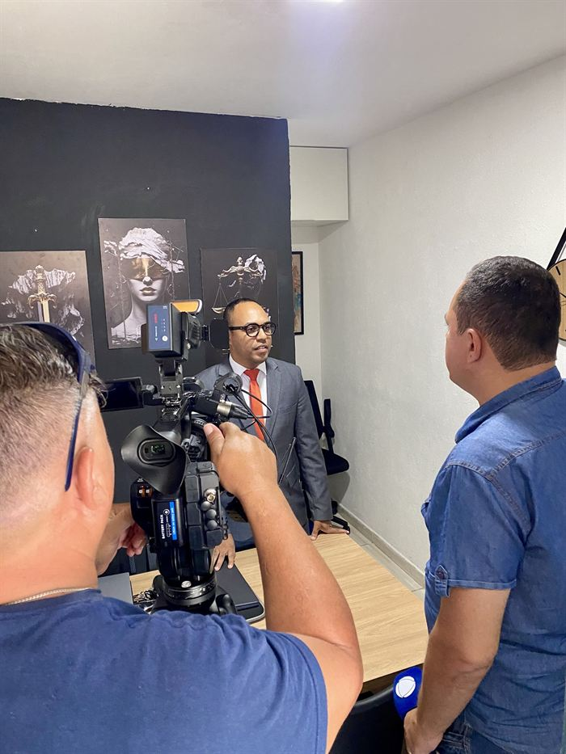

Kelvis AntônioAdvogado
Advocacia em Maceió.
Atuação nacional.
Orientação e atuação em demandas administrativas e judiciais.
- Direito Trabalhista
- Direito Previdenciário
- Direito Criminal e Cível
Kelvis Antônio
OAB/AL 20333 · OAB/PE 69472
Atendimento jurídico.
Áreas de atuação.
O escritório atua em quatro áreas do Direito e analisa cada caso individualmente.
Direito Trabalhista
Atuação em demandas trabalhistas, com análise individual da situação e dos documentos.
Direito Previdenciário
Benefícios do INSS, como auxílio-doença, aposentadoria por invalidez e pensão por morte.
Tempo de contribuição e BPC/LOAS.
Direito Criminal
Orientação jurídica e acompanhamento em demandas criminais.
Direito Cível
Orientação jurídica e atuação em demandas cíveis.
Atendimento presencial
em Maceió.
O escritório fica no Tabuleiro do Martins, em Maceió, e está aberto 24 horas.
Av. Vereador Dário Marsíglia Tabuleiro do Martins, Maceió – AL, 57081-015 (82) 99435-9080Na mídia e no escritório.

Gravação no escritório

Fachada do escritório
Kelvis AntônioAdvogado · OAB/AL 20333 · OAB/PE 69472
Kelvis Antônio da Silva é advogado com inscrições em Alagoas e Pernambuco. Seu escritório fica em Maceió e atende em todo o Brasil.
O atendimento é conduzido pelo próprio advogado, que ouve o relato e analisa os documentos de cada caso.